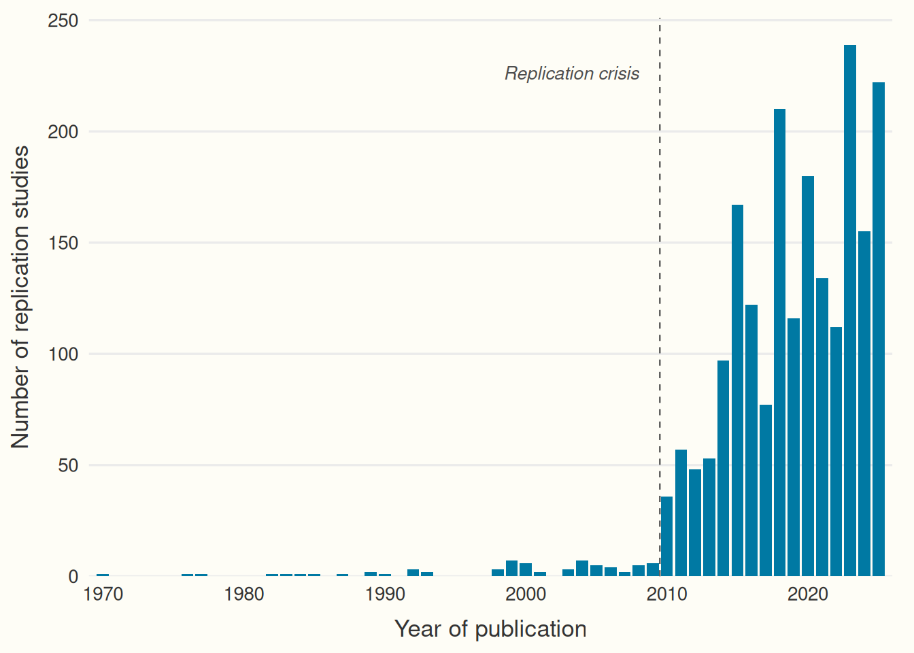

R/fig_replication_growth.R; the book renders it from the committed snapshot data/flora_replication_counts.csv.

PR #42 · tracked changes
“The proof established by the test must have a specific form, namely, repeatability. The issue of the experiment must be a statement of the hypothesis, the conditions of test, and the results, in such form that another experimenter, from the description alone, may be able to repeat the experiment. Nothing is accepted as proof, in psychology or in any other science, which does not conform to this requirement.” – (Dunlap, 1926)
Repeatability is the cornerstone of many sciences: Although scientific claims are often assumed to be robust, without explicit reproduction and replication — that is, retesting a hypothesis with the same (reproduction) or different (replication) data — it remains unclear whether this assumption holds.
Large-scale replication projects have begun to examine how often published findings hold up on retesting, with sobering but also highly variable results. In a sample of psychology studies from selected journals, the Reproducibility Project successfully replicated roughly a third of the studies it examined when success was judged by statistical significance (Open Science Collaboration, 2015), while coordinated multi-laboratory efforts have shown that replicability varies markedly from one effect to another (Klein et al., 2014). Comparable projects in experimental economics (Camerer et al., 2016), among social science experiments published in Nature and Science (Camerer et al., 2018), and in preclinical cancer biology (Errington et al., 2021) have each produced mixed evidence, supporting some original findings while leaving others unsupported or inconclusive. These headline figures should be read with caution, however, because reported success rates vary widely across fields and depend heavily on how studies are selected, how a replication is defined, and which criterion of success is applied, whether statistical significance, the size of the original effect, or a subjective judgement by the replicating team. Any single percentage therefore reflects a particular set of methodological choices as much as the underlying reliability of a field.
Cumulative science without repetition is costly: building on unreliable findings leads to research waste and misdirected effort. The aim of this guide is to empower researchers to conduct high-quality reproductions and replications and thereby contribute to making their fields of research more cumulative and robust. Issues of replicability have been discussed across many disciplines, such as psychology (Open Science Collaboration, 2015), economics (Dreber & Johannesson, 2024), biology (Errington et al., 2021), marketing (Urminsky & Dietvorst, 2024), linguistics (McManus, 2024), computer science (Hummel & Manner, 2024) and epidemiology (Lash et al., 2018) and the number of replications has been rising sharply (see Figure 1, which shows replications only as there is no comprehensive database for reproductions yet).
R/fig_replication_growth.R; the book renders it from the committed snapshot data/flora_replication_counts.csv.

While the number of replication and reproduction studies has increased, the overall proportion of them is still very small, with reviews finding that replications make up well below 1% of published papers (Perry et al., 2022)only a small fraction, on the order of one percent or less, of published papers (Makel et al., 2012; Perry et al., 2022). Moreover, much of the guidance on replications is still being developed (Clarke et al., 2026) and in narrow parts of science, which leads to fragmentation, siloing, and potentially inconsistent information.
Here we attempt to integrate useful guidelines (e.g., Block & Kuckertz, 2018; Jekel et al., 2020) into a comprehensive overview that allows diverse fields to profit from each other. In sum, this guide provides information about the entire process of research allowing researchers at all career stages to plan, conduct, and publish reproduction and replication studies. We limit our scope to quantitative research, given that the concept of reproducibility and replicability itself is highly contested among qualitative researchers (see Makel et al., 2012; Bennett, 2021; Cole et al., 2024; Pownall, 2022).